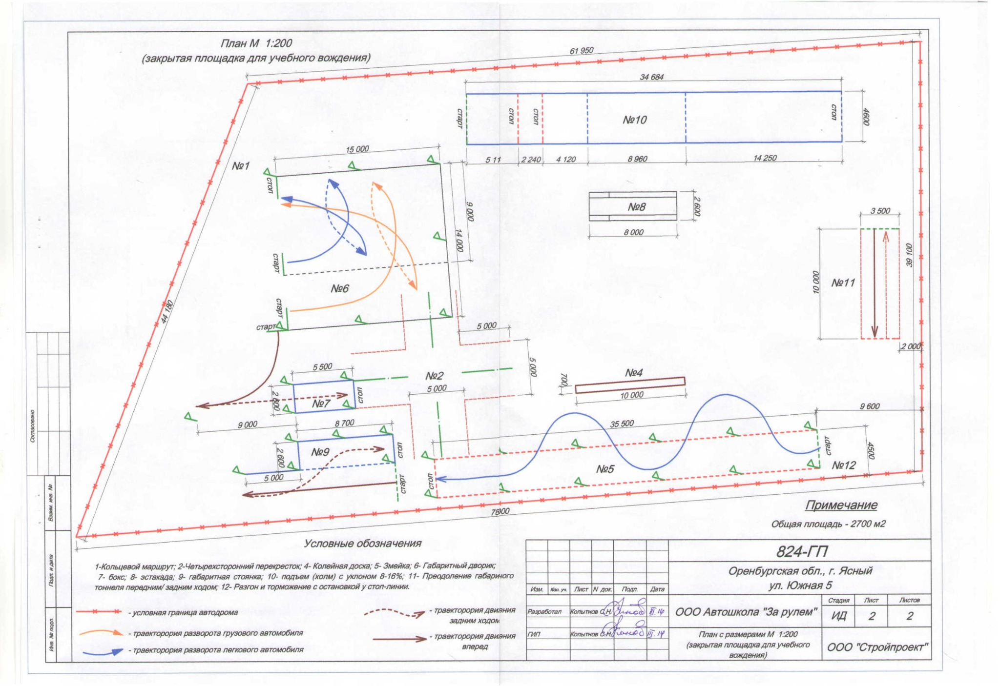

Внутренний экзамен
Для допуска к внутреннему экзамену требуется подтвержденная учетная запись на Госуслугах, копии паспорта и СНИЛС, квитанция об оплате госпошлины, полная оплата обучения и при необходимости согласие родителя.
Памятки по внутреннему экзамену и экзамену в ГИБДД, порядок действий и полезные документы.
Для допуска к внутреннему экзамену требуется подтвержденная учетная запись на Госуслугах, копии паспорта и СНИЛС, квитанция об оплате госпошлины, полная оплата обучения и при необходимости согласие родителя.
Городской этап проходит по специальному маршруту. Экзаменатор дает команды заблаговременно, а итог оценивается по системе штрафных баллов.
На площадке выполняются упражнения и базовые элементы управления автомобилем.

